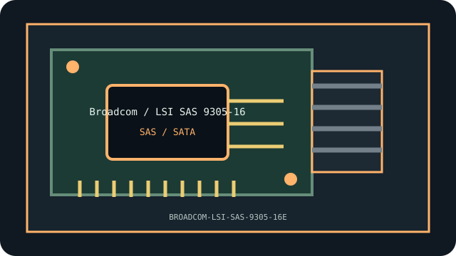

[ INDIVIDUAL COMPONENT // STORAGE / DISK I/O ]
Broadcom / LSI SAS 9305-16e
16 external lanes, 4×SFF-8644; SAS3. This model-specific archival record distinguishes documented product facts from platform-level compatibility assumptions.

MODEL SCOPE: Broadcom / LSI SAS 9305-16e. Confirm board revision, exact product label, firmware, bracket, and accessories before installation.
Reference specifications
| Model identifier | Broadcom / LSI SAS 9305-16e |
|---|---|
| Host bus | PCIe 3.0 x8 |
| Interfaces and protocols | 16 external lanes, 4×SFF-8644; SAS3 |
| Controller / chipset | LSI SAS3216 SAS3 host controller |
| Driver and operating-system notes | Broadcom legacy support; Linux mpt3sas |
| Compatibility and archival notes | All ports are external; check cables, enclosure and airflow; port count is not a throughput guarantee. |
Compatibility, care & archival notes
- All ports are external; check cables, enclosure and airflow; port count is not a throughput guarantee.
- Record PCB/revision identifiers, subsystem IDs, firmware and supplied accessories; OEM and retail versions may differ.
- Retain a verified backup and known-good driver/firmware before changing a working legacy configuration.
Sources & further reading
- Manufacturer — Broadcom / LSI SAS 9305-16e product referenceVendor reference for the named model or family; confirm exact revision and current archived manual.
- PCI-SIG — PCI Express specificationsBus terminology; physical slot fit does not guarantee electrical compatibility.
- Linux kernel — PCI support documentationGeneral enumeration reference, not a promise of support for every device feature.